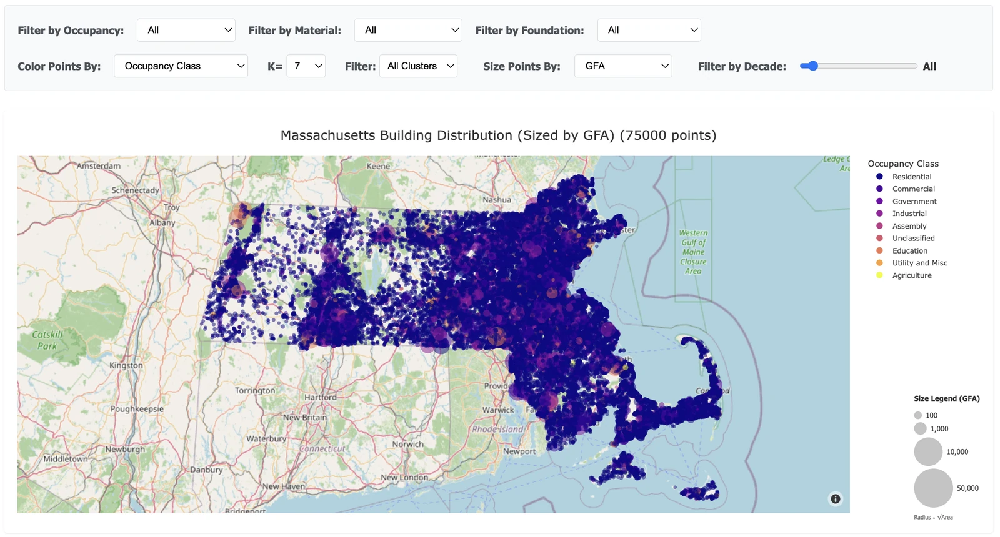

Massachusetts Building Analysis Dataset & Dashboard
Structural Futures Lab · 2025 – 2026
- Fused 2M+ building polygons with point-level attribute data using multi-stage spatial joins and nearest-neighbor matching across the state.
- Merged five national and city datasets — USA Structures, NSI, Web Soil Survey, MassGIS — into one GeoPackage with occupancy conflict detection, soil property linkage, and material/foundation classification.
- Wrote the Python preprocessor: cleaning, K-Means clustering, soil composition analysis, and chunked JSON export sized for the browser.
- Shipped 20+ Plotly and D3 views covering building age, occupancy, height, floor area, material, and data quality.
- Scale
- 2,091,488 polygons · 5 source datasets
- Role
- Data engineering, modeling, front end — end to end
- Stack
- Python · GeoPandas · Pandas · scikit-learn · Plotly.js · D3.js
- Output
- Unified GeoPackage + 20-view dashboard
